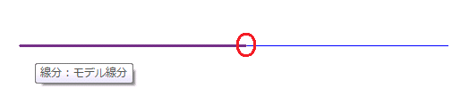
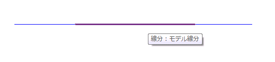

Curve.Intersect Return Values
The first day of the Saudi Arabian Revit API training completed yesterday. This training will go on for three days instead of the usual two, so that we have more time to deal with the installation and basics as well as various advanced topics. Yesterday we dealt with installation and setup issues, of Revit, Visual Studio, and the Revit SDK with its tools and utilities. We started looking at Hello World style samples, i.e. the basic skeletal structure and installation of Revit add-ins, and more basic material remains to be covered.
In lack of a beach, I spent an hour after the training on the sea-side. The hotel is on the corniche right in front of King Fahd's fountain, so I got to see the sun set through that. I went out again later on to enjoy the moon, which was full yesterday and is starting to wane now.
Way back in 2009, Scott Conover discussed the Curve.Intersect method when looking at curves in his AU 2009 class on analysing building geometry.
Here is a slightly more detailed question by Katsuaki Takamizawa and clarification by Scott on the results returned in the case of overlapping curves:
Question: Does anyone know the exact meanings of SetComparisonResult.Subset and SetComparisonResult.Superset returned by the Curve.Intersect method?
The API reference explains SetComparisonResult.Subset like this:
1. The inputs are parallel lines with only one common intersection point...

Does this mean that the curves are parallel and connected at one of their end points as shown above?
2. ... the curve used to invoke the intersection check is a line entirely within the unbound line passed as argument curve.

Would this be returned by curve.Intersect(curve1, resultArray), if 'curve' is the highlighted curve above? Also, could the two lines be completely overlapped?
SetComparisonResult.Superset is explained like this:
3. The input curve is entirely within the unbound line used to invoke the intersection check.

Would this be returned by curve.Intersect(curve1, resultArray), if 'curve1' is the highlighted curve above? And again, could the two lines also be completely overlapped?
I would appreciate if anyone knows about the exact meanings and could confirm them.
Answer: I think you've got it right:
- Subset – the two curves meet at one endpoint, or the input curve is a bound line which lies within the extents of the invoking curve, the 'this' curve, which is the unbound line.
- Superset – the reverse of the second condition above, the 'this' curve is a bound line, the input curve is unbound and overlapping.
In either case, according to the documentation, one of the curves must be unbound. So two curves which are bound and which overlap would return Overlap instead, unless they were identical, in which case they return Equal.